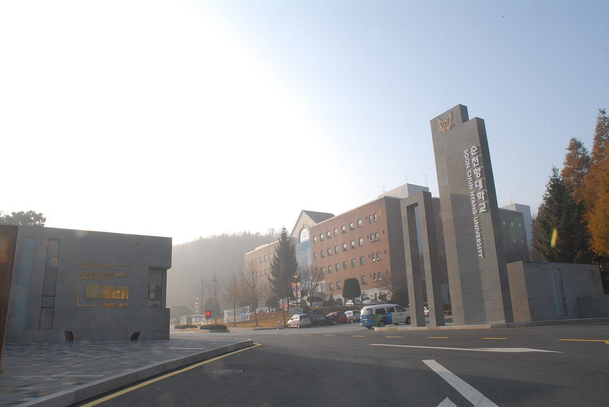

순천향대학교는 충청남도 아산시 신창면에 있는 사립대학입니다. 1978년에 문을 열었고, 부천·천안·구미·서울에 대학병원을 둔 의료 계열이 학교의 중심축입니다.
2027학년도 수시 원서접수는 2026년 9월 7일 오전 10시부터 9월 11일 오후 7시까지였고 이미 마감됐습니다. 그래도 이 글을 정리하는 이유는 순천향대 수시에 올해 눈여겨볼 대목이 두 가지 있기 때문입니다. 하나는 지역인재가 한 종류가 아니라는 것, 다른 하나는 의예과에 지역의사선발전형이 처음 생겼다는 것입니다.
먼저 큰 그림입니다.
- 학생부교과 교과우수자 — 가장 큰 전형. 600명대 규모를 학생부 교과 100%로 선발
- 지역인재가 두 갈래 — 충남형과 충청형으로 나뉘고, 교과와 종합 양쪽에 있음
- 의예과 지역의사선발전형 — 2027학년도 첫 시행. 순천향대는 18명 모집
- 학생부종합 — 일반학생 외에 SW융합 전형이 따로 있음
- 실기우수자와 조기취업형계약학과 등 성격이 다른 트랙도 운영
① 지역인재가 두 종류라는 말의 뜻
다른 대학 기사를 읽다 오신 분이라면 "지역인재전형"이 하나라고 생각하시기 쉽습니다. 순천향대는 다릅니다. 학생부교과에 충남형지역인재전형과 충청형지역인재전형이 각각 있고, 학생부종합에도 같은 구분이 들어갑니다.
이름에서 짐작되시겠지만 대상 범위가 다릅니다. 하나는 충청남도로 좁혀진 쪽이고, 다른 하나는 충청권 전체로 넓힌 쪽입니다. 범위가 좁을수록 경쟁 상대가 적어지고, 넓을수록 지원할 수 있는 학생이 많아집니다.
그래서 충청권 학부모님께서 먼저 하셔야 할 일은 순서가 정해져 있습니다.
- 내 아이가 두 전형 중 어느 쪽에 해당하는지를 먼저 확인합니다. 둘 다 되는 경우도 있고, 하나만 되는 경우도 있습니다.
- 둘 다 된다면 어느 쪽에 쓰는 것이 유리한지를 봐야 합니다. 모집인원과 지난해 경쟁률이 서로 다릅니다.
다만 각 전형의 정확한 지원 자격 문구와 모집인원은 이 글에서 확인하지 못했습니다. 모집요강의 지원 자격 원문에서 확인하셔야 하는 항목입니다. 지역인재는 자격이 안 되면 성적과 무관하게 탈락하는 전형이라, 여기서만큼은 추정으로 판단하지 않으시는 편이 좋습니다.
학년별 기준도 함께 정리해 두십시오. 2027학년도는 해당 지역 고등학교에서 고교 3년 전 과정을 이수하면 되는 것이 일반적인 기준이고, 2028학년도부터는 여기에 중학교 시기의 거주·재학 요건이 더해지는 방향으로 강화됩니다. 지금 중학생 자녀를 두셨다면 고등학교를 고를 때가 아니라 지금 살고 있는 곳과 다니는 중학교가 이미 조건 안에 들어가 있습니다.
② 학생부교과 교과우수자 — 교과 100%라는 구조
순천향대 수시에서 규모가 가장 큰 전형은 학생부교과(교과우수자)입니다. 600명대를 뽑고, 선발 방법은 학생부 교과 100%로 알려져 있습니다.
교과 100%라는 말은 두 가지를 동시에 뜻합니다.
먼저 단순합니다. 자기소개서도, 면접도, 서류평가도 계산에 들어가지 않습니다. 3년 동안 쌓인 성적표 한 장이 결과를 만듭니다. 학생부 비교과가 약한 학생, 말로 자기를 설명하는 데 서툰 학생에게는 오히려 공정한 구조입니다.
동시에 냉정합니다. 다른 것으로 뒤집을 자리가 없습니다. 종합전형이라면 "성적은 조금 모자라지만 활동으로 설명이 되는" 경우가 있지만, 교과 100%에는 그 여지가 없습니다. 지원하는 순간 이미 결정된 숫자로 줄을 섭니다.
그래서 고1·고2 학생에게는 이 전형이 오히려 더 중요한 이야기가 됩니다. 지금 학기의 내신이 곧 3년 뒤 이 전형의 지원 가능 여부이기 때문입니다. 3학년이 되어 전형을 고르는 단계에서는 이미 손댈 것이 없습니다.
다만 반영 교과와 학년별 반영 비율, 등급별 환산 점수표는 이 글에서 확인하지 못했습니다. 대학마다 이 부분이 크게 다르고, 같은 내신 등급이라도 계산 결과가 달라집니다. 반드시 모집요강의 성적 산출 방법을 직접 보셔야 합니다.
③ 올해 처음 생긴 의예과 지역의사선발전형
2027학년도 입시의 가장 큰 변화 하나가 지역의사선발전형입니다. 서울을 제외한 지역 의과대학에서 올해 처음 시행됐고, 보도된 내용에 따르면 전국 규모는 490명 수준입니다.
순천향대는 여기에 18명을 배정했습니다. 소속 권역은 대전·충남 권역이고, 충남 진료권 선발과 대전·세종·충남·충북 광역권 선발로 나뉩니다.
이 전형의 핵심은 모집인원이 아니라 합격 이후에 붙는 조건입니다. 지역의사선발전형으로 입학한 학생은 의사면허를 취득한 뒤 지정된 지역에서 10년간 의무복무해야 합니다.
학부모님께 이 대목을 특히 말씀드립니다. 10년은 사람의 20대 후반부터 30대 후반까지에 해당하는 기간입니다. 결혼, 거주지, 전공 선택, 수련 병원까지 전부 이 조건 안에서 정해집니다. "의대에 들어갈 수 있는 길이 하나 더 생겼다"로만 보고 접근할 전형이 아닙니다. 아이가 그 조건을 이해하고 스스로 동의했는지가 먼저입니다.
지원 자격도 일반 전형보다 까다롭습니다. 보도된 안내에 따르면 중학교와 고등학교 전 교육과정을 해당 지역에서 이수하고 실제로 거주한 이력까지 확인합니다. 고등학교만 그 지역에서 다녔다면 해당되지 않을 수 있습니다.
다만 순천향대 지역의사선발전형의 전형 방법 세부 내용, 면접 실시 여부와 형식, 수능최저학력기준은 이 글에서 확인하지 못했습니다. 의예과는 조건 하나가 결과를 바꾸는 모집단위이므로, 반드시 대학이 공지한 「2027학년도 지역의사선발전형 안내」와 모집요강 원문을 함께 보셔야 합니다.
④ 학생부종합 — 일반학생과 SW융합
순천향대 학생부종합에는 일반학생전형 외에 SW융합전형이 따로 있습니다. 이름 그대로 소프트웨어 관련 모집단위를 위한 별도 전형입니다.
학생부종합의 평가는 학업역량과 진로역량을 중심으로 이루어지는 것으로 안내되어 있습니다. 이 두 단어를 학부모님이 읽으실 때 유용한 구분법이 있습니다.
- 학업역량 — 성적 자체가 아니라 성적이 만들어진 과정입니다. 어려운 과목을 피하지 않았는지, 성적이 흔들렸을 때 어떻게 대응했는지가 기록에서 읽힙니다.
- 진로역량 — 장래희망을 일찍 정했는지가 아니라, 선택한 과목과 활동 사이에 설명 가능한 연결이 있는지입니다. 3년 치 선택과목을 늘어놓았을 때 하나의 이야기로 읽히면 됩니다.
SW융합처럼 분야가 좁혀진 전형은 이 연결이 더 분명해야 합니다. 프로그래밍 대회 수상 같은 눈에 띄는 기록이 없어도 괜찮습니다. 다만 왜 이 분야를 선택했고 학교 안에서 무엇을 해 봤는지가 기록에 남아 있어야 합니다.
학생부종합의 서류평가 항목별 배점, 단계별 선발 여부와 배수, 면접 실시 여부는 이 글에서 확인하지 못했습니다. 면접이 있는 전형에 지원하셨다면 일정은 모집요강에서 반드시 확인하십시오.
⑤ 그 밖의 트랙 — 성격이 다른 문들
순천향대에는 일반적인 교과·종합 외에 성격이 다른 전형이 함께 운영됩니다.
- 학생부교과 기회균형전형, 기초생활수급자 및 차상위계층전형, 농어촌학생전형, 특성화고졸업자전형 — 정원 내외로 나뉘고 지원 자격이 서로 다릅니다.
- 실기우수자전형 — 공연영상학과 등 실기 기반 모집단위. 올해 공연영상학과(연기) 지원자는 원서접수 시 음원 업로드와 큐시트 작성이 필수 절차였습니다.
- 조기취업형계약학과전형 — 입학과 취업이 연결된 과정으로, 일반 학과와 이수 구조 자체가 다릅니다.
이런 전형은 "지원 자격이 되면 경쟁률이 낮다"는 이유로 권해지는 경우가 있는데, 입학 후 이수 방식까지 확인하고 결정하셔야 하는 트랙입니다. 특히 계약학과는 졸업 후 진로가 미리 정해지는 구조라 아이의 동의가 먼저입니다.
⑥ 지원 전 체크리스트
- 충남형과 충청형 중 어느 쪽에 해당하십니까? — 둘 다 되는지, 하나만 되는지부터 모집요강 원문으로 확인하십시오.
- 교과 100% 전형의 반영 방식을 보셨습니까? — 반영 교과와 학년별 비율에 따라 같은 등급도 결과가 달라집니다.
- 지역의사선발전형의 10년 의무복무를 아이가 알고 있습니까? — 부모님이 아니라 아이가 이해하고 동의했는지가 기준입니다.
- 학생부종합이라면 선택과목이 하나의 이야기로 읽힙니까? — 3년 치 선택과목을 종이에 적어 놓고 읽어 보시면 바로 보입니다.
- 실기·계약학과에 지원했다면 제출 절차를 다 마치셨습니까? — 서류 하나가 빠지면 성적과 무관하게 탈락합니다.
⑦ 학년별로 지금 할 일
- 고3 — 원서는 마감됐습니다. 지금 남은 일은 면접이 있는 전형의 준비와 정시 대비 수능 공부입니다. 결과를 기다리며 손을 놓는 시간이 12월에 가장 아깝게 느껴집니다.
- 고2 — 교과 100% 전형이 큰 대학이라는 점을 기억하십시오. 3학년 1학기까지가 승부이고, 그 설계는 지금 시작해야 합니다.
- 고1 — 1학년 성적이 그대로 3년 내신에 들어갑니다. 그리고 지금 고른 선택과목이 2년 뒤 종합전형에서 읽히는 이야기가 됩니다.
- 중학생 — 충청권에 사신다면 2028학년도부터 강화되는 지역인재 거주 요건이 지금 진행 중입니다. 의대를 생각하고 계시다면 지역의사선발전형의 중·고교 이수 요건도 지금부터 해당됩니다.
와와 학습코칭센터에서는 아이의 내신과 선택과목을 지원하려는 대학의 전형 기준에 맞춰 다시 정리해, 지금 어느 과목부터 손을 대야 하는지 함께 짚어 드립니다. 가까운 센터에서 무료 상담을 받아 보실 수 있습니다.
※ 본 글은 순천향대학교 입학처 공지와 2027학년도 수시모집 관련 보도, 대학 입학정보 공개 내용을 바탕으로 정리했습니다. 전형별 세부 모집인원, 충남형·충청형 지역인재의 정확한 지원 자격 문구, 반영 교과와 학년별 반영 비율, 등급별 환산 점수표, 수능최저학력기준의 적용 여부와 기준, 면접 실시 여부·형식·일정, 학생부종합 서류평가의 항목별 배점과 단계별 선발 배수, 지역의사선발전형의 전형 방법, 합격자 발표 일정은 확인하지 못해 이 글에 담지 않았습니다. 모집인원은 보도된 범위 안에서 완충해 표기했으며 확인되지 않은 숫자는 기재하지 않았습니다. 사진은 과거에 촬영된 것으로 현재 모습과 다를 수 있습니다. 세부 사항은 모집요강에서 확정되며 변경될 수 있으므로, 반드시 순천향대학교 입학처의 2027학년도 수시모집요강 원문에서 본인 지원 모집단위 기준으로 최종 확인하시기 바랍니다.